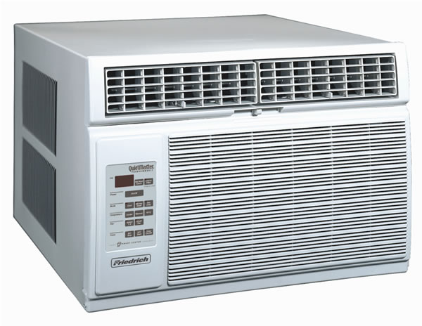
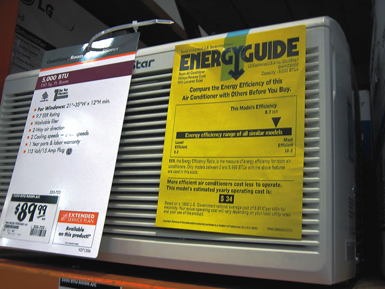
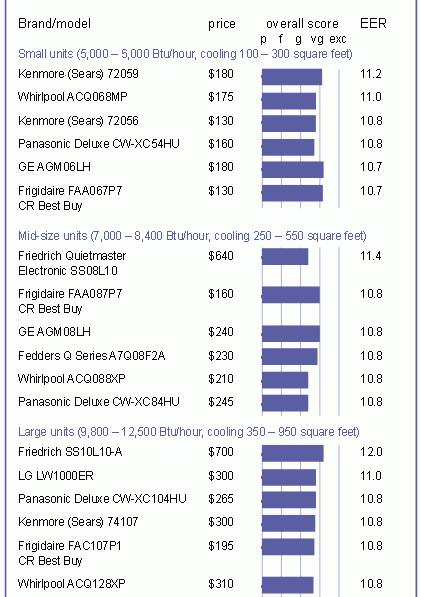

Home cooling accounts for about 13 percent of the typical household energy bill, and even more for those who live in year-round warm climates. Choosing a more efficient room air conditioner saves money, especially since it decreases your energy use during peak demand periods, when electricity rates may be highest. Plus, a small air conditioner can cool a small, enclosed area more economically than a central system.
Cooling a room or two adequately can be more than just a question of comfort it can be a matter of health. The elderly, young children, overweight individuals and those with heart or neurological conditions can be particularly vulnerable to high temperatures. In 1995, for example, hundreds of Chicago residents died as a result of a July heat wave.
Some medications prescribed for allergies, congestion, depression and heart conditions can increase sensitivity to heat. If you live in an urban area with a smoggy summer, an air conditioner can reduce your exposure to ozone and other air pollutants. An air conditioner (or dehumidifier) also can help address mold problems by reducing humidity.
Energy-efficient alternatives to standard air conditioners, such as geothermal heat pumps orwhere water is plentiful and humidity is lowevaporative coolers, can work in some parts of the country. First of all, use fans, minimize indoor heat sources and work with ventilation. Then, if you decide you need an air conditioner for one or two rooms, this article will help you choose the right one.
Learn to understand the labels
Product labels show three items that reveal a wealth of information about the individual model of room air conditioner.
Energy Efficiency Rating (EER). These numbers are prominent on the yellow EnergyGuide labels for room air conditioners. They indicate operating costs compared to units of similar size, and interpreting them is simple the higher the better. Since 1990, federal law has required all air conditioners to have an EER of at least 8.0.
Btu/hour. Cooling capacity is rated by the manufacturer in British thermal units per hour. In this case, higher isnt necessarily better; ideal capacity depends on the size and nature of the room you need to cool, among other factors. An oversized air conditioner actually can perform less efficiently and effectively than a smaller, correctly sized unit. A dealer can help you select the right size, or you can find numerous aids onlinesearch for air conditioner size calculator.
Energy Star. These stickers appear on room air conditioners that use at least 10 percent less energy than similar models. Room air conditioners must have an EER of at least 10.7 to qualify. You should have no trouble finding Energy Star models these days.
Chill the bill
Always operate your unit efficiently. If you consistently leave the temperature setting one degree higher than the standard setting (letting the room become warmer), your cooling bills will drop by at least 3 percent. Built-in efficiency features include automated thermostats with timers that let you set the temperature and program the machine to turn on automatically just before you get home from work or errands. You wont waste energy air-conditioning empty space or swelter as you wait for the machine to cool the room.
Other efficiency features include variable-speed fans and new settings such as sleep, which allows the room temperature to rise a few degrees, then lowers it seven hours later. If your unit has a filter, clean or replace it regularly. The filter keeps dust and other particulates from entering your home, but a dirty filter will reduce the efficiency of your unit. The owners manual will show how and when to change the filter.
The house can help you keep your cool
The characteristics of your home can affect the performance of an air conditioner. Ceiling fans can make a room feel 6 or 7 degrees cooler. On mildly warm days, you can stay comfortable by turning on the fan instead of the air conditioner. Simply closing drapes or drawing blinds during the day can help keep your home cool. Even better are awnings, because they block radiant heat before it enters the house. New windows also can help your home stay cooler. Modern replacement windows have two or more panes of glass with a layer of air or another gas between for insulation, and are sometimes specially coated to deflect solar radiation; the coating can be fine-tuned for different climates. (See High-performance Windows, December/January 2006.)
Insulation is critical to helping your home stay warm in the winter and cool in the summer. Landscaping can help, too. Strategically placed trees, high shrubs or hedges can go a long way toward keeping your home cooler. For more ideas specifically tailored to your home, check to see if your local utility company offers energy audits.
Repair, replace or recycle?
Room air conditioners typically last 10 to 15 years, and most models are fairly simple and cost-effective to repair. But with recent substantial efficiency improvements, buying a new unit often makes more sense than repairing a broken one. Replacing units that are more than 20 years old, even if they still work, can bring huge savings. In fact, you can cut your cooling bill in half by replacing an air conditioner manufactured before 1979, when the first state efficiency standards went into effect, with a new, energy-efficient model. Some state governments and public utilities encourage consumers to replace old air conditioners with more efficient units by offering tax incentives or buy-back and rebate programs. Consult your local utility company for details, or check the Database of State Incentives for Renewable Energy, www.dsireusa.org.
Air-conditioning systems are made primarily with steel and plastic, two materials that are highly recyclable. But be careful when discarding air conditioners to ensure that the coolants are not released into the air. Your municipality may require the safe removal of any coolants before it will haul a discarded unit away, so contact local recyclers or waste disposal officials for information. Air conditioners built since 1995 dont contain the powerful ozone-depleting chemicals called chlorofluorocarbons, but units produced before then may still contain them. Room air conditioners now contain hydrofluorocarbons, chemicals that do not deplete the ozone layer, but still must be contained because they are potent greenhouse gases that can contribute to global warming.
|
 FRIEDRICH Friedrich air conditioners scored highest for energy efficiency in the mid- and large-size categories. |
 CHARLES HIGGINSON EnergyGuide labels like the one above show the appliance’s energy efficiency rating?(EER). It’s emphasized on room air conditioners, because an efficient model that costs more upfront will save money over the long term. |
 |